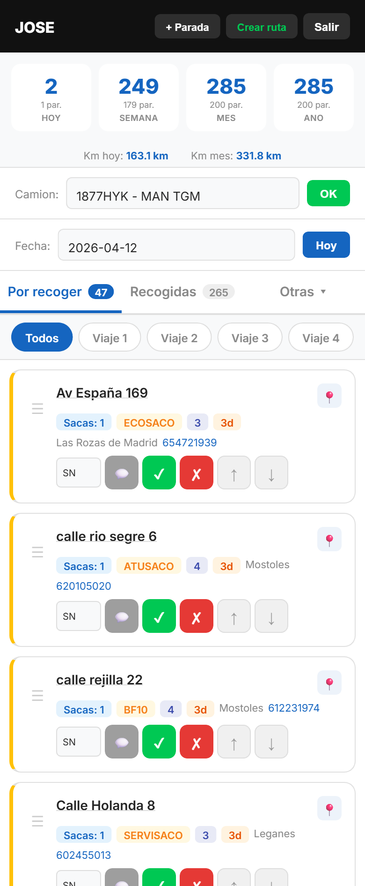
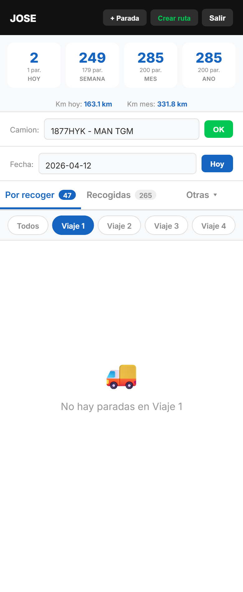
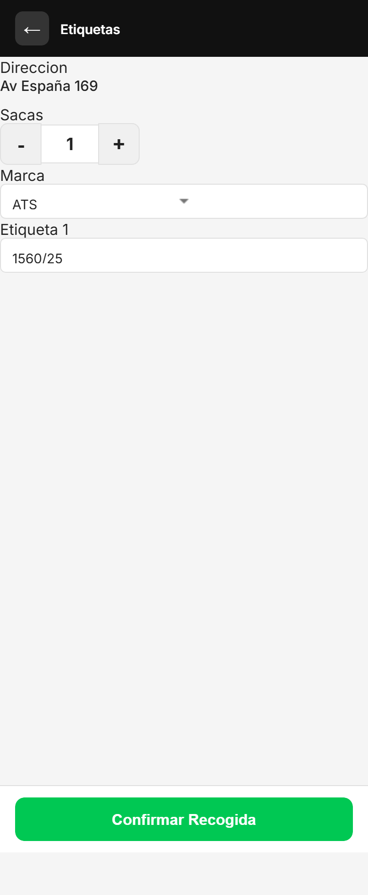
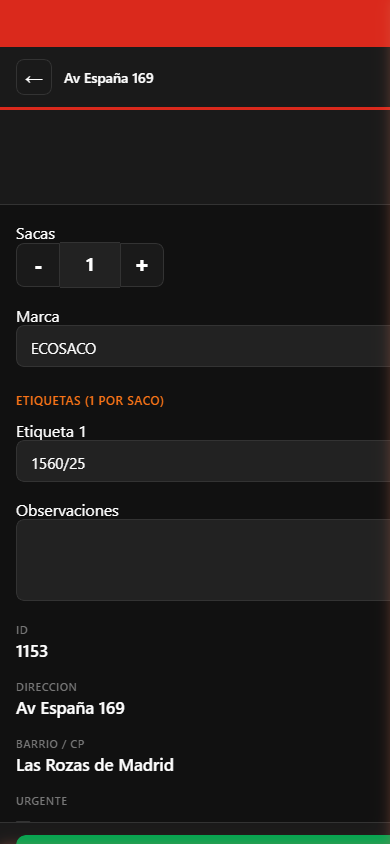
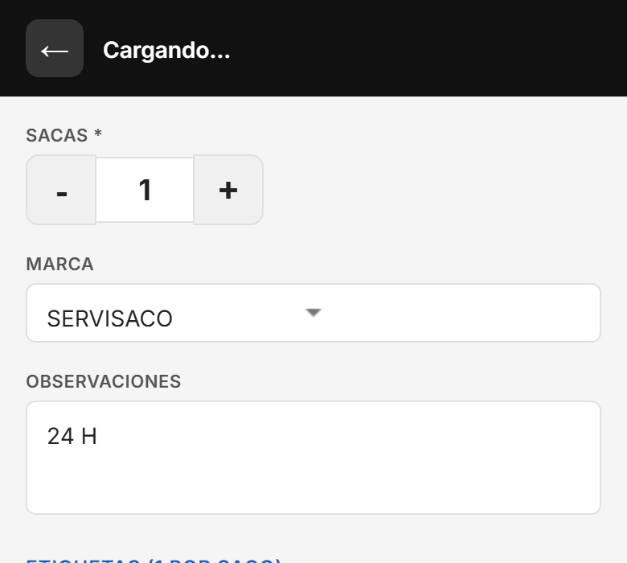

La app del Conductor es una aplicacion movil (PWA) que se instala en tu movil desde el navegador. Se usa para gestionar las paradas de recogida diarias, organizar viajes y marcar las sacas recogidas.
1Abre la app
Pulsa el icono "SERVISACO" en tu movil. Si no lo tienes instalado, abre Chrome y ve a la direccion de la app. Te aparecera un banner para instalarla.
2Introduce tu PIN
Veras un teclado numerico. Pulsa los 4 digitos de tu PIN personal. Los puntos se ponen rojos al pulsar cada numero.
Pantalla de inicio — Introduce tu PIN de 4 digitos
Importante: Tu PIN es personal. No lo compartas con otros conductores. Si te equivocas, pulsa la flecha de borrar y reintenta.
2. Pantalla principal
Despues de introducir el PIN correcto, veras tu pantalla de trabajo con toda la informacion del dia.

Pantalla principal — Estadisticas, camion, fecha y lista de paradas
Cabecera
Tu nombre arriba a la izquierda.
+ Parada: crear una nueva parada de recogida.
Crear ruta: asignar viajes automaticamente a las paradas.
Salir: cerrar sesion y volver al PIN.
Estadisticas (barra verde)
Hoy: sacas recogidas hoy (y paradas entre parentesis).
Semana: sacas de esta semana.
Mes: sacas del mes actual.
Ano: sacas del ano.
Km hoy / Km mes: kilometros estimados de las rutas (en azul).
Seleccion de camion
Selector con tu camion habitual ya preseleccionado.
Puedes cambiarlo y pulsar OK para guardar.
Obligatorio antes de empezar la jornada.
Pestanas
Por recoger: paradas pendientes. El numero rojo indica las sacas totales.
Recogidas: paradas ya recogidas.
Otras ▾: submenu con "No estan" y "Todas".
Cada parada muestra
Direccion (pulsa para ver detalle).
Sacas (azul), Marca (amarillo), Viaje (azul), Dias pendientes (naranja/rojo).
Barrio, telefono de contacto.
Pin de mapa (si tiene ubicacion GPS).
3. Botones de cada parada
Cada parada pendiente tiene estos botones en la fila de acciones:
SN / V1 / V2...
Selector de viaje. Asigna la parada a un viaje manualmente.
Bocadillo gris
Abre la pantalla de observaciones para escribir notas, cambiar sacas, marca y etiquetas.
Check verde ✔
Marcar como RECOGIDA. Se abre una pantalla para introducir las etiquetas antes de confirmar.
X roja ✘
Marcar como NO ESTA. El cliente no estaba en la direccion.
Flechas ↑ ↓
Subir o bajar la parada en la lista para cambiar el orden.
☰ (arrastrar)
Manten pulsado y arrastra la parada hasta la posicion que quieras.
📍 (mapa)
Abre Google Maps mostrando la ubicacion exacta de la parada.
4. Viajes y rutas
Los viajes organizan las paradas en grupos. Cada viaje es un recorrido con el camion cargado.

Vista de Viaje 1 — Salida, destino y botones de ruta
Seleccionar un viaje
Debajo de "Por recoger" veras las pestanas: Todos, Viaje 1, Viaje 2, Viaje 3, Viaje 4.
Pulsa en un viaje para ver solo las paradas de ese viaje.
Aparece la direccion de Salida y Destino.
Crear ruta automatica
1Pulsa "Crear ruta"
Esta en la cabecera, al lado de "+ Parada".
2Indica cuantos viajes
Te pregunta cuantos viajes vas a hacer hoy (de 1 a 4). La app reparte las paradas en esos viajes, agrupando por barrio y respetando la capacidad del camion.
3Revisa el resultado
Te muestra un resumen: cuantas paradas y sacas en cada viaje, km estimados, y sacas sin asignar (si no caben todas).
Puntos de salida y destino
Viaje 1: sale de la Nave de Getafe.
Viajes 2, 3 y 4: salen del Vertedero Valdemingomez.
Todos los viajes terminan en el Vertedero Valdemingomez.
Botones de ruta (solo en vista de viaje)
🚗 Ruta
Abre Google Maps con las paradas en el orden de la lista.
🚗 Ruta optimizada
Abre Google Maps con el orden mas rapido calculado automaticamente por Google.
Consejo: Usa "Ruta optimizada" para ahorrar tiempo y combustible. Google calcula el mejor orden de paradas.
5. Marcar una recogida
Cuando llegas a una parada y recoges las sacas:

Pantalla de recogida — Introduce las etiquetas de cada saco
1Pulsa el check verde ✔
Se abre una pantalla con la direccion, numero de sacas y marca.
2Revisa y edita si es necesario
Puedes cambiar el numero de sacas con + y -, y cambiar la marca con el desplegable.
3Introduce las etiquetas
Escribe el numero de etiqueta de cada saco. Hay un campo por saco.
4Pulsa "Confirmar Recogida"
La parada se mueve a la pestana "Recogidas" y las sacas se suman a tus estadisticas del dia.
Te equivocaste? Ve a la pestana "Recogidas", busca la parada y pulsa "Por recoger" para devolverla.
6. Ver detalle de una parada
Pulsa en el nombre de la direccion (texto subrayado) de cualquier parada para ver toda su informacion.

Detalle de parada — Campos editables arriba, informacion abajo
Campos editables (parte superior)
Sacas: cambiar con los botones + y -.
Marca: cambiar con el desplegable.
Etiquetas: un campo por cada saco para el numero de etiqueta.
Observaciones: texto libre para notas del conductor.
Botones rapidos (parte superior)
Escribir Observacion: abre la pantalla de observaciones.
Marcar Recogida: marca como recogida (pide etiquetas).
Marcar No Esta: marca que el cliente no estaba.
No olvides pulsar "Guardar" para que los cambios se guarden en el servidor.
7. Escribir observaciones
Pulsa el bocadillo gris de una parada para abrir la pantalla de observaciones.

Observaciones — Edita sacas, marca, notas y etiquetas